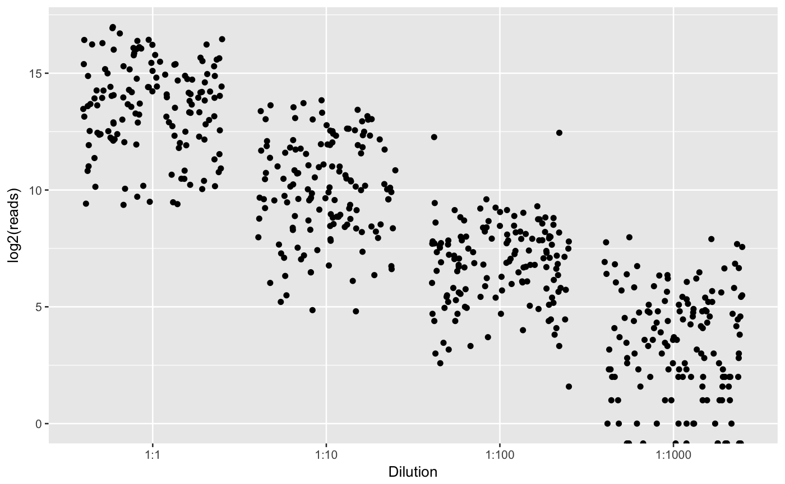
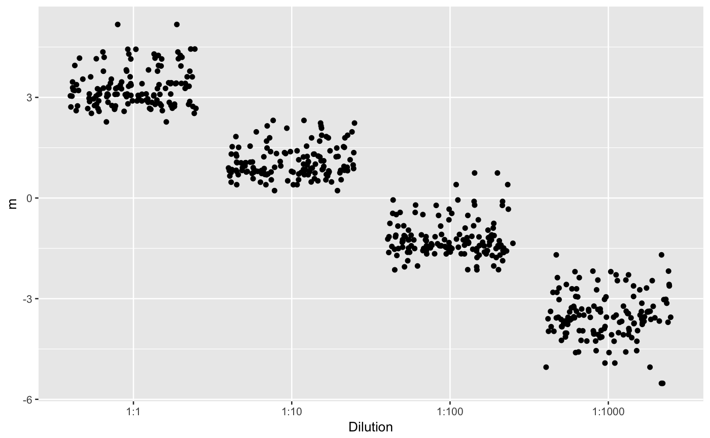

this is the source file for fitting the linear quadratic normal family
isoCorrect(train, data, cycles = 5000, long = FALSE)
| train | Long data.frame to train model. |
|---|---|
| data | Long data.frame to correct abundance. |
| cycles | Number of cycles to reach convergency. |
| long | Boolean if input is in long format instead of standard wide format (rows:miRNAs, columns:samples). |
data.frame with corrected expression
Methods adapted from:
Argyropoulos, Christos, et al. "Modeling bias and variation in the stochastic processes of small RNA sequencing." Nucleic Acids Research (2017).
options(warn = -1) # this is only for tiny example data(mirTritation) ma <- isoCorrect(mirTritation[mirTritation$class=="train",], mirTritation[mirTritation$class=="test",],cycles=5,long=TRUE)#> GAMLSS-RS iteration 1: Global Deviance = 39000.5 #> GAMLSS-RS iteration 2: Global Deviance = 38564.41 #> GAMLSS-RS iteration 3: Global Deviance = 37919.24 #> GAMLSS-RS iteration 4: Global Deviance = 36917.76 #> GAMLSS-RS iteration 5: Global Deviance = 35390.42 #> GAMLSS-RS iteration 1: Global Deviance = 9211.416 #> GAMLSS-RS iteration 2: Global Deviance = 8002.558 #> GAMLSS-RS iteration 3: Global Deviance = 7217.307 #> GAMLSS-RS iteration 4: Global Deviance = 6799.902 #> GAMLSS-RS iteration 5: Global Deviance = 6579.711